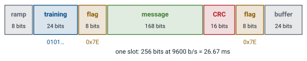
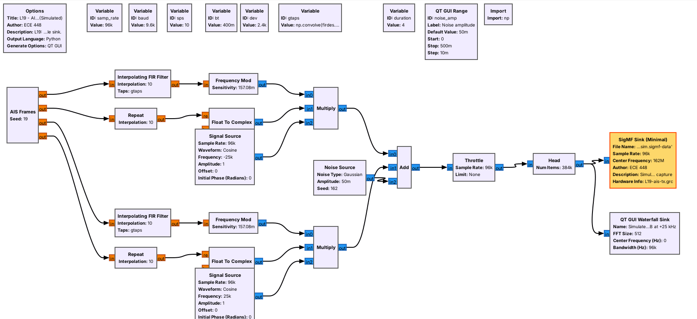
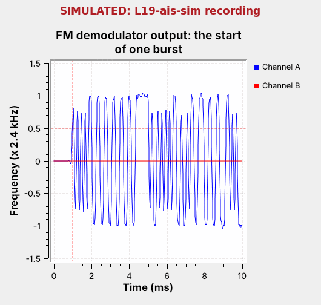
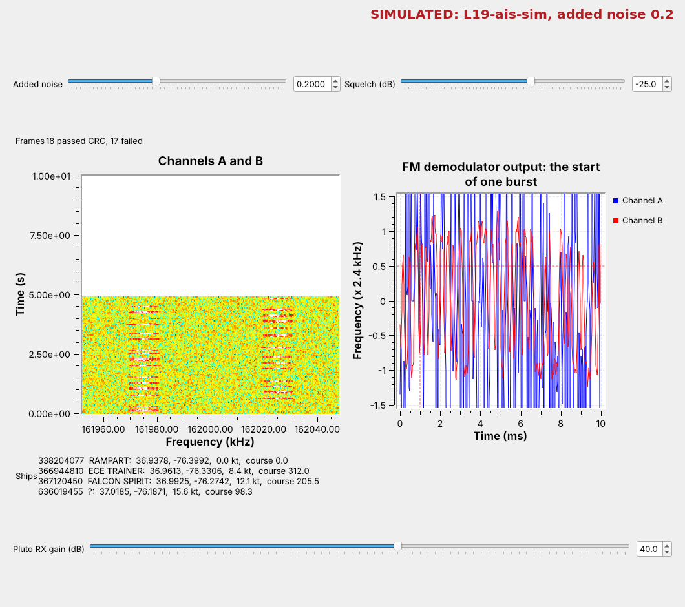

L19 - AIS#
AIS
We build a simulated AIS transmitter with GMSK, then receive both channels and decode each ship’s identity and position.
Lesson 19 · Module 6: Waveform Applications & RF Reverse Engineering · Dr. Neil Rogers
Slides
Learning Objectives
- I can receive and decode AIS messages from marine vessels.
Ships in the Harbor

Run
L19-ais-rx.grconL19-ais-sim.sigmf-data.Bursts alternate between two channels; the table fills with ships.
Ships do on VHF what aircraft did on 1090 MHz in Lesson 18: they announce who they are and where they are, several times a minute, to anyone listening. The figure is today’s receiver, L19-ais-rx.grc, playing a simulated recording of four ships off Norfolk, Virginia. Each mark on the waterfall is one burst, on one of two channels 50 kHz apart. The plot on the right is one burst after the FM demodulator, and the table lists each ship by its number, its name, and where it is.
There are no AIS-equipped ships near USAFA, so this lesson works from recordings: one we make ourselves with a simulated transmitter, and any real one you bring back from a coast. The same transmitter can also go out from a PlutoSDR at 915 MHz into a cable through the 30 dB attenuator, never on the AIS channels, so a Pluto receives it live. The topics follow the 2025 slides: what AIS is, its message, its modulation, the NMEA sentences decoders print, and the tools, with the slides’ CRC placed where the decoder checks it.
The Automatic Identification System
Two VHF channels: 161.975 and 162.025 MHz.
9600 b/s, GMSK, with NRZI coding.
Time is cut into slots of 26.67 ms: 2,250 a minute on each channel.
The Automatic Identification System (AIS) lets ships identify themselves to each other and to shore stations, which use it to track traffic and avoid collisions. Every large ship carries a Class A transponder, and many small craft carry a lower-power Class B. A moving Class A ship reports its position every 2 to 10 s and its name and voyage every 6 minutes.
AIS uses two marine VHF channels, called A at 161.975 MHz and B at 162.025 MHz, and ships alternate between them. Each channel’s minute is divided into 2,250 slots of 26.67 ms, exactly 256 bits at 9600 b/s, and each transmission fills one slot or a few. Ships choose free slots themselves and announce which ones they will use next, so nearby ships do not collide; that scheme is called SOTDMA, Self-Organizing Time Division Multiple Access.
Find It on the Air
In
L19-ais-rx.grc, enable the PlutoSDR Source, Low Pass Filter, and AGC, withfcat 162e6.Look for short bursts at −25 and +25 kHz. Near USAFA, expect none.
On a coast, the first look uses today’s receiver with the PlutoSDR in place of the recording. The course Plutos run from 70 MHz to 6 GHz, so 162 MHz is in range:
Open
L19-ais-rx.grc, select the SigMF Source and the Throttle, and press D to disable both. Select the gray PlutoSDR Source, Low Pass Filter, and AGC and press E to enable them. The AGC scales the bursts to a power near 1 whatever their strength, so the squelch keeps its meaning; start the squelch near −10 dB. The Pluto’s URI isip:192.168.2.1, and its center frequency is the variablefc, 162e6, halfway between the channels.Run it, and raise the Pluto RX gain slider until the bursts stand well above the waterfall’s floor.
Watch the waterfall for short bursts, each a little shorter than one 26.67 ms slot, at −25 kHz (channel A) and +25 kHz (channel B). In a busy harbor several arrive every second, and the Ships label fills.
In Colorado the waterfall stays empty at 162 MHz, which is why we use recordings, and why On the SDR sends our own ships at 915 MHz.
The Burst

Training bits let the receiver lock its timing.
Flags, 01111110, mark where the message starts and ends.
The CRC tells the receiver whether the message arrived intact.
Each transmission is one burst, laid out as in the slides. The transmitter ramps up for 8 bits, then sends 24 training bits, alternating 0 and 1, which give the receiver’s timing loop something regular to lock to. An 8-bit flag, 01111110 or 0x7E, marks the start of the data. The 168-bit message follows, then a 16-bit CRC computed from it, and a second flag marks the end. The last 24 bits are a buffer for stuffed bits and for the time the signal takes to travel up to about 200 nautical miles.
This framing is HDLC, a standard data-link format, and it is why the decoder searches for flags. A longer message, such as the 424-bit name and voyage report, fills two slots instead of one.
Bit Stuffing and NRZI
Bit stuffing: after five 1s in a row, the transmitter inserts a 0.
NRZI: a 0 changes the level and a 1 keeps it.
The receiver undoes both: no flag inside the data, no polarity to know.
Two coding steps sit between the bits and the radio. The first is bit stuffing. A flag has six 1s in a row, so the data must never have six; whenever the message and CRC hold five 1s in a row, the transmitter inserts a 0 after them, and the receiver removes any 0 that follows five 1s. That makes a burst a few bits longer than 256 minus its buffer, which is one reason for the buffer.
The second is NRZI, Non-Return-to-Zero Inverted: a 0 changes the transmitted level and a 1 keeps it. The receiver only asks whether the level changed, so it does not need to know which level is which. The training bits, alternating 0 and 1, become a level that changes every other bit, and long runs of 1s become steady levels, which is why bit stuffing also keeps the level changing often enough for the receiver to track its timing.
GMSK
GMSK is FSK: the frequency moves up for one level, down for the other.
A Gaussian filter rounds the levels first, so the spectrum stays narrow.
The envelope is constant, so the amplifier can run at full power.
The levels go on the air as Gaussian Minimum Shift Keying (GMSK), a type of FSK, as the slides say. The frequency moves 2.4 kHz up for one level and 2.4 kHz down for the other, the smallest shift for which the receiver can still separate the two tones at 9600 b/s; that is what “minimum shift” means. Before the frequency modulator, a Gaussian filter rounds each step from one level to the other, which keeps the signal’s power inside its 25 kHz channel instead of spreading it into the neighbors.
The filter’s sharpness is set by its BT, the product of its bandwidth and one bit’s duration. AIS uses BT = 0.4. A smaller BT gives a narrower spectrum but smears each bit into its neighbors; the explorer shows the smearing. GMSK, like FM, has a constant envelope: only the frequency changes, so the transmitter’s amplifier can run at full power without distorting it. GSM phones use GMSK for the same reason.
AIS Bit Explorer
The explorer follows one short stretch of a burst through the transmitter of L19-ais-tx.grc: the bits with any stuffed 0 shaded amber, the NRZI level, and the frequency after the Gaussian filter, with the unfiltered level dashed. The bottom rows are a receiver: the frequency it demodulates with noise added, a sample at the center of each bit, and the bits it decides after undoing NRZI. Choose “Five 1s” to watch a stuffed 0 appear, start at BT 0.4, where single bits already fall short of ±2.4 kHz, lower it and watch them shrink further, and then raise the noise until a sample lands on the wrong side and a bit turns red.
The Simulated Transmitter

AIS Frames builds each burst and its NRZI levels.
An Interpolating FIR Filter applies the Gaussian; Frequency Mod makes GMSK.
L19-ais-tx.grc follows the GMSK test plots on the 2025 slides: levels, a Gaussian filter, and FM. The AIS Frames block is an Embedded Python Block that does the framing of the last frames for four ships: message, CRC, stuffing, flags, and NRZI. It outputs, for each channel, the level of every bit and a gate that is 1 during a burst. An Interpolating FIR Filter holds each level for 10 samples and applies the Gaussian filter, with taps built from firdes.gaussian at BT 0.4, and Frequency Mod turns the result into ±2.4 kHz. The gate switches the carrier on and off, and a Signal Source moves each channel to −25 or +25 kHz.
A Noise Source adds noise, and a SigMF Sink writes 4 s at 96 kS/s, centered on 162 MHz, to L19-ais-sim.sigmf-data, labeled Simulated in its .sigmf-meta. The ships report much more often than real ones, so a few seconds hold every message type. Nothing transmits. L19-ais-tx-pluto.grc sends the same ships from a PlutoSDR at 915 MHz into a cable through the 30 dB attenuator instead, never on 161.975 or 162.025 MHz; On the SDR uses it.
The Receiver

For each channel: shift to 0 Hz, squelch, FM-demodulate.
Symbol Sync picks one sample per bit; the Binary Slicer decides it.
The SigMF Source plays the recording at 96 kS/s. For a radio, a PlutoSDR Source at 576 kS/s, a Low Pass Filter that decimates by 6, and an AGC replace the SigMF Source and the Throttle. We keep the Pluto above about 521 kS/s, the lowest rate its AD9364 chip runs at on its own. Each channel then gets its own chain. A Frequency Xlating FIR Filter moves the channel to 0 Hz, keeps ±7 kHz, and decimates by 2, to 48 kS/s, which is 5 samples per bit. A Power Squelch passes the signal only while its power is above the Squelch slider and outputs zeros between bursts, so the timing loop does not chase noise. Quadrature Demod is the FM demodulator of Lesson 7; its gain is set so that ±2.4 kHz comes out as ±1. Symbol Sync, from Lesson 9, picks one sample per bit; here it uses the zero-crossing detector, which locks within the 24 training bits. The Binary Slicer turns each sample into a 1 or a 0, and the AIS Decoder reads both channels’ bits.
What the Demodulator Shows

The training is a steady square wave: the level changes every other bit.
The flag is the one long flat run: six 1s, no change.
The time sink triggers when channel A’s demodulator output crosses 0.5 and shows 10 ms, starting 1 ms before the trigger. The first 2.5 ms are the 24 training bits: under NRZI, alternating 0s and 1s change the level every other bit, so the trace is a regular square wave with a period of four bits. Then the trace holds high for seven bits, about 0.7 ms: that is the flag, whose six 1s keep the level and whose 0s change it at each end. The data begins after it, with runs whose lengths follow the bits.
The edges are rounded and the single-bit swings fall short of ±1: that is the Gaussian filter at BT 0.4, seen from the receiver.
Decoding Step by Step
Undo NRZI. 2. Find the flags. 3. Remove the stuffed 0s.
Check the CRC. 5. Reverse each byte’s bits and read the fields.
The AIS Decoder is an Embedded Python Block, and it runs the transmitter’s steps backward on each channel’s bits. It undoes NRZI by asking whether each bit’s level matches the one before, watches for the flag 01111110, and collects the bits up to the next flag. It removes every 0 that follows five 1s, then checks the 16-bit CRC; a frame that fails is counted and dropped. HDLC sends each byte least significant bit first, so the decoder reverses each byte to recover the message, then prints it and updates the table.
The slides show Python’s crc library with a CRC-8 example; AIS uses a 16-bit CRC, the X.25 form that HDLC uses, which the decoder computes in a few lines. The Frames label counts frames that passed and failed the CRC.
NMEA Sentences and Fields
!AIVDM,1,1,,A,14eG;o@034o8sd<L9i:a;WF>062D,0*7D
Field |
Bits |
Meaning |
|---|---|---|
Message ID |
6 |
1, 2, 3: position; 5: name and voyage |
MMSI |
30 |
the ship’s 9-digit number |
Position |
55 |
longitude, latitude in 1/10,000 minute |
Decoders hand their results to chart plotters in NMEA 0183 sentences, the format in the slides. !AIVDM marks an AIS message received from another ship; then come the number of sentences in this message and this sentence’s number, a sequence number for messages that need more than one sentence, the channel, the message itself, the number of fill bits, and after the * a two-digit checksum: the XOR of every character between the ! and the *, not the CRC the 2025 slide names. The message is packed 6 bits to a character, so the slides’ 28 characters carry a 168-bit position report. Our decoder prints every message this way, and you can paste a sentence into pyais or an online decoder to check it.
Inside, the first 6 bits are the message ID, the next 2 a repeat indicator, and the next 30 the MMSI, the ship’s Maritime Mobile Service Identity; its first three digits say which country registered it, such as 338 and 366 to 369 for the US; the ITU’s table of Maritime Identification Digits lists them all. A position report goes on to the navigation status, speed, longitude, latitude, course, and heading. Our decoder reads message IDs 1, 2, 3, 5, 18, and 24, which cover the positions and names of both classes.
What Noise Does

Raise Added noise: frames start to fail the CRC.
Past the squelch, noise opens it and the timing loop wanders: raise Squelch.
The figure raises the added noise to 0.2. The bursts still show on the waterfall, but the demodulated trace of each burst blurs, some bits land on the wrong side of the slicer, and frames start failing the CRC. Both traces in the time plot now swing wildly: the noise alone is above the −25 dB squelch, so the squelch stays open, and Symbol Sync chases noise between bursts and starts each burst out of step.
Raise the Squelch slider until the noise between bursts stays out and the traces go quiet between bursts, and frames come back; raise it too far and the weak ships disappear. A real receiver sets this threshold from the noise it measures.
Ready-Made Decoders
radioconda has no AIS module, so our decoder is an Embedded Python Block.
gr-ais is a GNU Radio module; gr-satellites decodes AIS from space.
pyais decodes and builds NMEA sentences in Python.
The slides list gr-ais, gr-satellites, SDR Angel, and SCEPTRE. gr-ais, by Nick Foster, is an out-of-tree GNU Radio module with an AIS receiver; a fork has a branch for GNU Radio 3.10, but radioconda does not ship it, so our flowgraph uses the AIS Decoder above. gr-satellites decodes AIS among its many satellite telemetry formats, since satellites in low orbit receive AIS over the open ocean. Optional: outside GNU Radio, SDRangel, the commercial SCEPTRE, and, on a coast, AIS-catcher or rtl_ais with an RTL-SDR decode AIS.
The slides’ first activity builds an NMEA sentence with pyais, which also decodes them: pyais.decode(sentence) returns every field. Their second activity, a SigMF recording from the Noir CTF challenge, is replaced here by the lesson’s own recording.
Key Point
AIS sends HDLC frames at 9600 b/s on two VHF channels with GMSK. The receiver shifts each channel to 0 Hz, FM-demodulates it, recovers the timing, undoes NRZI, finds the flags, removes stuffed 0s, and checks the CRC.
On the SDR
Your own ships go out at 915 MHz, into a cable.
For a recording, match
samp_rate,decim, and the offsets.Never transmit on the AIS channels.
Your own ships. L19-ais-tx-pluto.grc sends the four ships from a PlutoSDR at 915 MHz, with channel A at −25 kHz and channel B at +25 kHz, as they sit around 162 MHz. A Rational Resampler raises its 96 kS/s to the Pluto’s 576 kS/s. It goes into a cable from the Pluto’s TX port through the 30 dB attenuator to a Pluto’s RX port, its own or a second Pluto’s. Or, if your instructor says so, it goes over the air at 915 MHz at low power. In L19-ais-rx.grc, enable the PlutoSDR Source, Low Pass Filter, and AGC as in Find It on the Air, set fc to 915e6, run both, and set the squelch near −10 dB; raise it if the traces swing wildly between bursts. With two Plutos on one laptop, give each flowgraph its Pluto’s usb: URI. On one Pluto, the transmitter and receiver share one sample-rate clock, so both run at 576 kS/s; start the transmitter first, and expect a brief glitch when the receiver starts. Never set TX attenuation below 30 dB or change the slider’s range.
A real recording. Open its .sigmf-meta and read the sample rate and center frequency. Type the file name into the SigMF Source, set samp_rate to the recording’s rate, and choose decim so that the rate after decimation is about 48 kS/s; sps follows. Set chan_a and chan_b to 161.975 and 162.025 MHz minus the center frequency. Then lower the squelch until bursts decode, raise it until the noise stays out, and pick a setting between. On a coast, a SigMF Sink after the PlutoSDR Source makes such a recording.
Receiving AIS is legal; transmitting on the AIS channels is not, because ships depend on them to avoid each other. The slides’ last activity, sending AIS data to someone, goes out at 915 MHz or into a file, never on 161.975 or 162.025 MHz.
Downloads
L19-ais-tx.grc: the simulated AIS transmitter. Writes
L19-ais-sim.sigmf-dataand.sigmf-meta, 4 s (3 MB) of four ships on both channels at 96 kS/s, then stops. No hardware needed.L19-ais-sim.sigmf-data and L19-ais-sim.sigmf-meta: the same recording, ready to download, labeled Simulated.
L19-ais-tx-pluto.grc: the same transmitter, sent from a PlutoSDR at 915 MHz into a cable through the 30 dB attenuator, or, if your instructor says so, over the air at 915 MHz at low power. Runs until you stop it. Needs a PlutoSDR.
L19-ais-rx.grc: the two-channel receiver, with the waterfall, the demodulator plot, the AIS Decoder, the Added noise and Squelch sliders, and a disabled PlutoSDR Source, Low Pass Filter, and AGC for a radio.
Put the receiver and the recording in one folder; GRC runs a flowgraph from its own folder. Each .sigmf-data file is complex float samples (cf32), as its .sigmf-meta says, so the SigMF Source’s type is complex float. The two decoders’ Embedded Python Blocks are saved inside the .grc files.
What this lesson follows. The topics and their order come from the slides. The hands-on steps follow the documentation of the blocks and tools:
GNU Radio wiki, Embedded Python Block, and the wiki pages of Frequency Xlating FIR Filter, Quadrature Demod, Symbol Sync, and Binary Slicer. Lesson 8 used the same FM demodulation for FSK, and Lesson 9 introduced Symbol Sync.
PySDR, Digital Modulation: FSK and its relatives, including GMSK.
gr-ais, gr-satellites, and pyais.
AIVDM/AIVDO protocol decoding, by Eric Raymond: every message type, field by field.
Summary
Idea |
What to know |
In GNU Radio |
|---|---|---|
AIS |
ships report identity and position on VHF |
two chains, one per channel |
Channels |
A at 161.975 MHz, B at 162.025 MHz |
Frequency Xlating FIR Filter at ±25 kHz |
Slots |
26.67 ms, 256 bits at 9600 b/s |
bursts on the waterfall |
Burst |
ramp, training, flag, message, CRC, flag |
training and flag: the first 3 ms after the trigger |
Coding |
bit stuffing, NRZI |
the AIS Decoder |
GMSK |
FSK at ±2.4 kHz through a Gaussian filter, BT 0.4 |
Interpolating FIR Filter and Frequency Mod |
Receiver |
squelch, FM demodulator, Symbol Sync, slicer |
Quadrature Demod, Symbol Sync |
Radio |
PlutoSDR at 576 kS/s, decimated by 6 |
PlutoSDR Source, Low Pass Filter |
Your own ships |
sent at 915 MHz, never on the AIS channels |
|
NMEA |
|
the decoder’s printout, pyais |
Noise |
frames fail the CRC; the squelch opens |
the Added noise and Squelch sliders |
Practice
Looking Ahead
The L18–L19 Lab decodes live aircraft and a recording of ships.
Lesson 20 turns to QAM and OFDM.
The L18–L19 Lab is the bench version of both lessons. You build an ADS-B front end yourself and decode the aircraft overhead, then build an AIS receiver from an empty canvas and decode a recording of ships whose sample rate and center frequency differ from today’s, so the settings are yours to work out.
Lesson 20 closes the course’s signals with QAM and OFDM, which carry more bits per symbol than anything we have decoded so far.